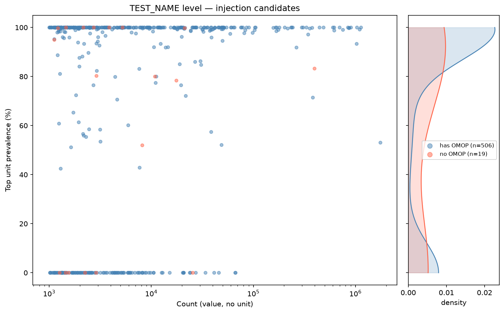

Active threshold: 98% — min count: 500 — 715 TEST_NAMEs, 31,962,504 measurements
| Threshold | UNAMBIGUOUS test names | UNAMBIGUOUS measurements | AMBIGUOUS test names | AMBIGUOUS measurements | NO_DATA test names | NO_DATA measurements |
|---|---|---|---|---|---|---|
| 95% | 434 (60.7%) | 26,508,342 (82.9%) | 79 (11.0%) | 4,345,264 (13.6%) | 202 (28.3%) | 1,108,898 (3.5%) |
| 98% * | 413 (57.8%) | 24,979,594 (78.2%) | 100 (14.0%) | 5,874,012 (18.4%) | 202 (28.3%) | 1,108,898 (3.5%) |
| 99% | 392 (54.8%) | 22,954,996 (71.8%) | 121 (16.9%) | 7,898,610 (24.7%) | 202 (28.3%) | 1,108,898 (3.5%) |
| 100% | 275 (38.5%) | 12,745,902 (39.9%) | 238 (33.3%) | 18,107,704 (56.7%) | 202 (28.3%) | 1,108,898 (3.5%) |
| TOTAL | 715 |
Assignment summary (successfully assigned)
UNAMBIGUOUS AMBIGUOUS NO_DATA TOTAL
names meas names meas names meas names meas
------ ------------------- ------ ------------------- ------ ------------------- ------ -------------------
All 10/10 2,800,937/2,800,937 10/10 5,300,918/5,300,918 28/202 285,698/1,108,898 48/222 8,387,553/9,210,753
OMOP-mapped 9/9 2,800,434/2,800,434 10/10 5,300,918/5,300,918 28/66 285,698/802,091 47/85 8,387,050/8,903,443
------ ------------------- ------ ------------------- ------ ------------------- ------ -------------------
Per-column search: text columns support regex (e.g. ^PASS$,
mmol). Numeric columns support comparisons: <3,
>=20, !=0. The global box top-right searches all columns with regex.
| Test name | Type | Cutoff | Outcome | Unit | Unit prev (%) | N cand | N target | KS stat | KS −log10p | KS pass | T stat | T −log10p | T pass | MAD dist | MAD thr | MAD pass | Notes |
|---|